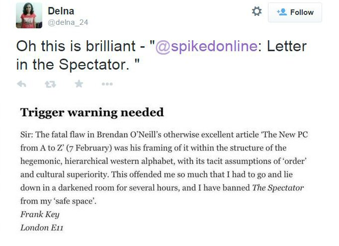

Tuesday, February the 17th, 2015
back to: title, date or indexes
As most of you lot know, I do not engage with Twitter. (The Hooting Yard Twitfeed is an automated bit of gubbins that updates whenever I post something here.). It has been brought to my attention, however, that last week I was all over Twitter like a rash—if being retwitted over fifty times is, as I am assured, a rash. The cause of the hoo-hah was the attention given to a letter I had published in The Spectator which is, I hope, self-explanatory.
